Bileco Poroso
Cabelo curto, bigode e barba aparados; camisa rubro-negra, calção escuro e luvas vermelhas. Silhueta média e equilibrada.
Academia · equilibradoVer folhas de animação
Defesa e esquiva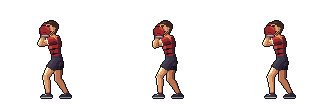
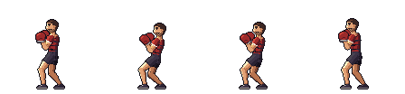
Vitória e nocaute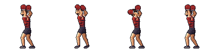
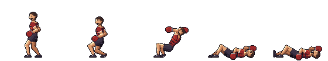
Reações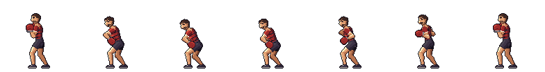
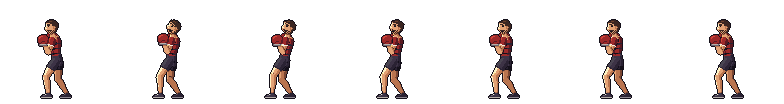
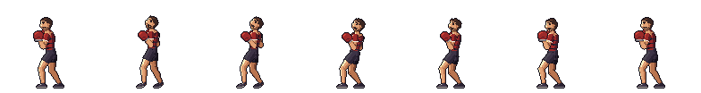
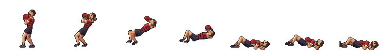
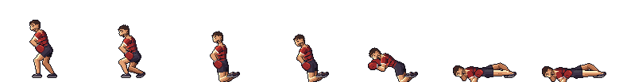
Leslie Chow
Mais baixo e compacto, cabelo castanho repartido, rosto arredondado e bigode discreto. Sem camisa, com luvas escuras e detalhe dourado no calção.
Academia · compactoVer folhas de animação
Defesa e esquiva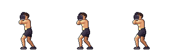
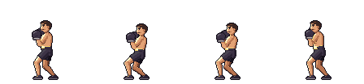
Vitória e nocaute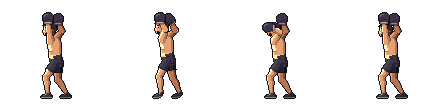
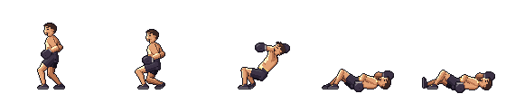
Reações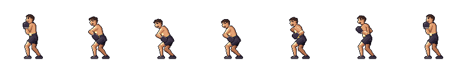
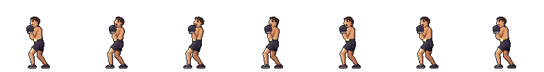
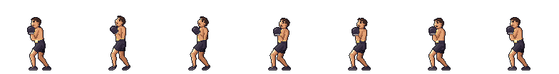
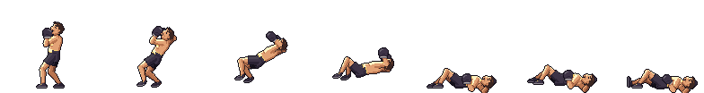
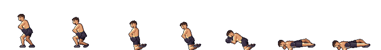
Sapão Cretino
Corpo bem pesado, moletom e calça escuros, óculos, dreads roxos e corrente dourada com cruz. Os detalhes acompanham o tronco nas poses.
Academia · resistenteVer folhas de animação
Defesa e esquiva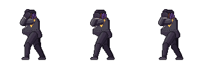
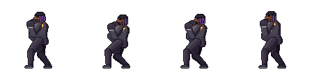
Vitória e nocaute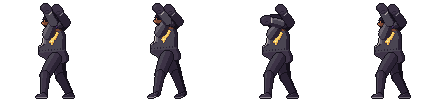
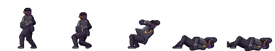
Reações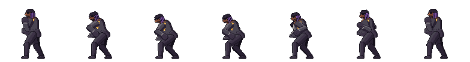
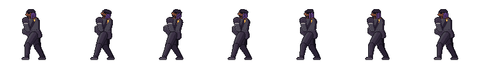
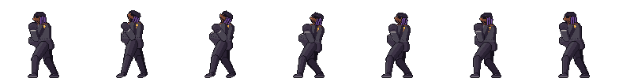
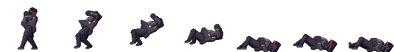
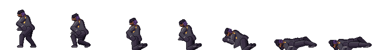